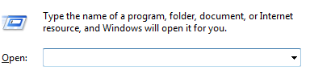
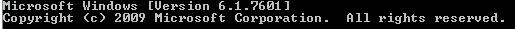
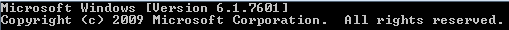
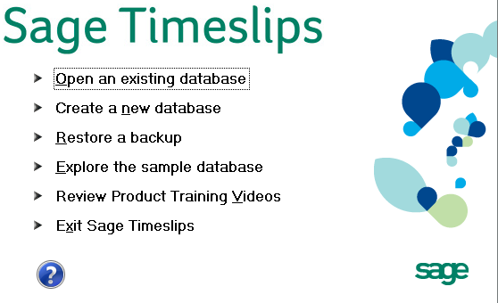
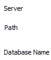
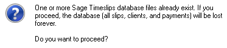

#Timeslips app is called from the installed path from the installer script (c:\tssmoketest\VERSION) #This script can be used in the installer,smoketest and fulltest scripts. from sikuli import* import RestorePrefs import mySettings import os import DBChecks import socket #defining app instance timeslip = App(os.path.join(r"C:\tssmoketest", Settings.Version, "timeslip.exe")) def create_ts_db(): #------Clearing registry to open timeslips to splash screen----# type("r", KeyModifier.WIN) wait(, 30) paste("cmd") type(Key.ENTER) wait(Pattern().similar(0.94), 30) # type(r'reg DELETE HKEY_CURRENT_USER\Software\Sage\Timeslips\v22\General /v Databasepath') type(r'reg DELETE HKEY_CURRENT_USER\Software\Sage\Timeslips') wait(1) type(Key.ENTER) wait(1) type("y") type(Key.ENTER) wait(1) type("exit") type(Key.ENTER) waitVanish(Pattern().similar(0.94), 30) #opening timeslips application timeslip.open() #------steps to create new empty Db------# wait(, 160) type("n") type("n") wait(Pattern().similar(0.96), 160) if exists(Pattern().similar(0.85)): keyDown(Key.SHIFT) type(Key.TAB + Key.TAB) keyUp(Key.SHIFT) paste(socket.gethostname()) type(Key.TAB) paste(os.path.join('c:', os.sep, 'tssmoketest', Settings.Version)) type(Key.TAB) paste('data01') wait(.5) elif not exists(Pattern().similar(0.85)): paste(os.path.join('c:', os.sep, 'tssmoketest', Settings.Version, 'data01')) wait(.5) type("n", KeyModifier.ALT) if exists(Pattern().similar(0.98)): type("y") waitVanish(Pattern().similar(0.98)) paste("Sage QA Automation Team") type("n", KeyModifier.ALT) wait(.5) type("n", KeyModifier.ALT) wait(.5) type("n", KeyModifier.ALT) wait(.5) type("n", KeyModifier.ALT) wait(.5) type("n", KeyModifier.ALT) wait(.5) type("n", KeyModifier.ALT) wait(.5) type(Key.SPACE) wait(.5) type("n", KeyModifier.ALT) type("n", KeyModifier.ALT) wait(Pattern().similar(0.91), 180) #timeslip.focus() type("f", KeyModifier.ALT) onAppear(Pattern().similar(0.82), type(Key.ENTER)) wait(Pattern().similar(0.98), 160) paste("S. Robertson") wait(1) type("n", KeyModifier.ALT) paste("S. Robertson") wait(1) type("n", KeyModifier.ALT) wait(1) type("o") type("f", KeyModifier.ALT) DBChecks.checkFor_Preferror() DBChecks.checkFor_BillingDate() DBChecks.checkFor_SPS() DBChecks.checkFor_PEP() waitVanish(Pattern().similar(0.87)) RestorePrefs.restore_prefs() waitVanish(Pattern().similar(0.93)) timeslip.close() #create_ts_db()